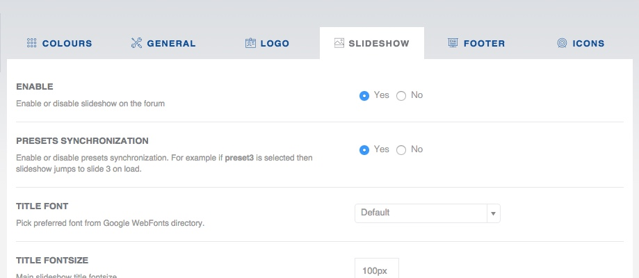

In this section you can configure several parameters for Slideshow section in the header area of Solace style.

Set this option to Yes if you want your slides to follow presets. For example if you select Preset6 in the Variation dropdown (on the frontend), then Slide 6 will be loaded as a starting slide.
You can also specify custom slideshow Height. This will resize container to to your custom height. Otherwise slideshow height will be the same as loaded image. Custom height example:
500px
Rest of the parameters are obvious and described inside Devlom Configurator Slideshow section.